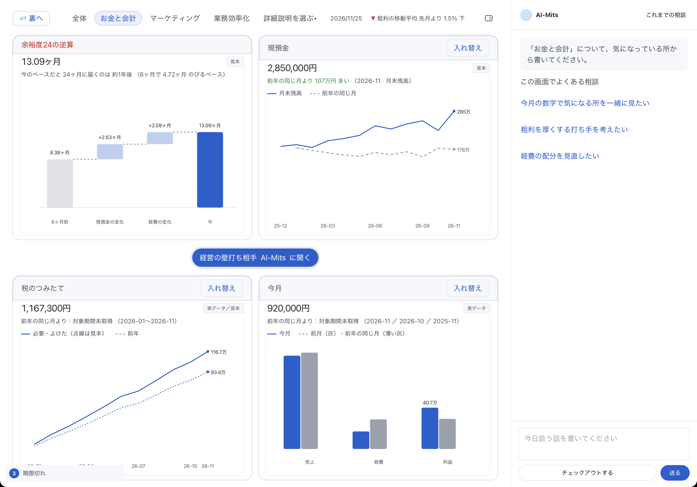

LPの該当説明から来た方は、ここから保存と送信の表をご覧ください。
操作した日・止まる日・課金が止まる日
| 操作した日 | 止まる日 | 課金が止まる日 |
|---|---|---|
| 未定 初回のお支払い日の前日までに「フリープランに切り替える」で停止を予約する案です。 | お試し終了日を停止日として表示し、その日まで竹を使い、翌日からNORMAL・DEEPと竹の有料機能を止める案です。 | 初回お支払い日から請求しない案です。既に有料の場合は、支払い済み期間の終了日の翌日から次回分を請求しない案です。 |
停止日の表示と請求の条件は未定です。申し込み前に確定する下書きです。
保存・送信・会話の利用・消し方を確かめる
未定
| 何を | どこへ | 誰が見る | 止め方 |
|---|---|---|---|
| 台帳の保存先 | 会計・顧客・仕事の記録を、お使いのパソコンに保存します。台帳そのものを運営者へ送る説明ではありません。 | ご本人です。相談で選んで送る数字は下の行をご覧ください。 | 手元のデータ操作で削除します。書き出した控えは別に削除します。 |
| 相談文 | 送信した相談文はDify・Anthropic等の外部AI基盤を経由します。 | 外部AI基盤で処理され、運営者は利用規約の目的の範囲で扱います。 | 送信前は送らずに止められます。送信後の削除は登録メールから依頼します。 |
| 選んで送る数字 | 初めは切ってあります。入れた場合は選んだ数字の要約を相談文に添えて外部AI基盤へ送ります。 | 外部AI基盤と、規約の範囲で運営者が扱います。 | 送信前に添付を切ります。送信済みの情報は削除を依頼します。 |
| 運営者の利用 | 会話を品質改善・機能開発・知見の作成・統計・教材推薦に利用します。公開には別に本人の許可が要ります。 | 運営者が規約に定めた目的で扱います。 | 改善利用を希望しない場合は登録メールから問い合わせます。以後の利用を停止する案です。 |
| 削除の依頼 | 手元の記録・控え・外部へ送った会話を分けます。 | 手元はご本人、外部保存分は運営者が対応します。 | 登録メールから削除を依頼します。法令上必要な情報と匿名化・統計化済みの情報は規約の例外があります。 |
| 名前・メールアドレスの用途未定 | メールアドレスは動画のご案内と、続きの視聴に戻るためのご連絡に使います。お名前の入力は任意です。 | 運営者と配信サービスで扱う案です。保存先・保存期間は未定です。 | 問い合わせの案内を見る |
| 受け取る案内 | 動画のあとに、3、40分の動画、LEVEL 1 のレターと竹の30日お試しをご案内します。 | 登録したメールアドレスへ運営者からお届けする案です。 | 配信は各メールの配信停止リンクから止められます。 |
| 配信を止める方法 | 配信は各メールの配信停止リンクから止められます。 | 配信サービスで停止を受け付ける案です。 | 配信停止とアプリの契約停止・会話の削除依頼は別です。 |
| 過去の会話 未定 | 原文と利用待ちの複製は、依頼日以降の改善利用から外す案です。作成済みの教材や統計・匿名化した集計は4区分の表をご確認ください。 | 運営者が保存範囲を確認する案です。 | 相談1件の例へ。対象期間の会話を指定する案です。 |
| 未定削除の受付と処理の目安 | 受付は2営業日以内、処理は受付後30日以内とする下書きです。正式な日数は未定です。 | 外部AI基盤の保存分も確認する案です。例外と日数は未定です。 | 受付と完了を登録メールへ知らせる案です。 |
| 未定登録情報の削除の頼み方 | 登録したメールアドレスから、名前・メールアドレスの削除を依頼する案です。 | 運営者と配信サービスの記録を確認する案です。 | 依頼先のメールアドレスは未定です。配信停止だけでは登録情報の削除になりません。 |
| 未定案内の回数・期間 | 登録直後の動画案内と、その後14日間で5回以内の案です。回数・期間は未定です。 | 運営者から登録メールアドレスへご連絡する案です。 | 各メールの配信停止リンクで止める案です。停止の反映時期は未定です。 |
根拠：/Users/nishidamitsuhiro/My Drive/claude-nishida/MITS-ALL/経営プロジェクト/経営の運転台/help_v1820/hajimeru.html・settei.html 更新日2026-11-25／版2.0.5。利用目的と公開：このページの利用規約第6・7・8条の引用。改善利用の断り方・削除の依頼・復元対象：案（参謀が書いた下書き）
未定
選んで送る数字の見本
切った場合：相談文「外注を決める前に何を確かめますか」だけを送ります。
入れた場合：同じ相談文に、選んだ月の売上80万円・原価15万円・ほかの経費20万円という要約を添える案です。実際の送信内容は未定です。
過去の会話の改善利用を4つに分ける
| 対象 | 依頼後の扱いの案 |
|---|---|
| 原文 未定 | 依頼より前の相談も、運営者が保持する原文は依頼日以降の改善利用から外す案です。削除とは別に依頼します。 |
| 利用待ちの複製 未定 | まだ改善利用していない複製は、依頼日以降の改善利用から外す案です。 |
| 作成済みの教材や統計 未定 | 依頼より前に作成した教材や統計を、さかのぼって変更・削除する範囲は未定です。 |
| 匿名化した集計 未定 | 個人との対応が失われた集計値は削除対象の例外とする案です。原文・特定可能な引用は含めません。例外の条件は未定です。 |
未定
Macが壊れたとき、控えから戻る物／設定し直す物
| 情報 | 控えから戻る物（案） | 設定し直す物（案） |
|---|---|---|
| 会計未定 | 控えを作った時点までの会計の記録を戻す案です。対象の帳簿・期間は未定です。 | 取得先の接続を確認し、控え以降の明細を取り直す案です。 |
| 顧客未定 | 控えを作った時点までの顧客・取引の記録を戻す案です。対象範囲は未定です。 | 会社の選択と、取り込み先の対応を確かめる案です。 |
| 仕事未定 | 控えを作った時点までの仕事・時間の記録を戻す案です。対象範囲は未定です。 | 作業フォルダなど新しいMacでの指定を確認する案です。 |
| 会話 未定 | 控えから相談履歴を戻す案を優先し、アカウントだけでは戻せるとしない案です。対象範囲は未定です。 | 戻らない場合に備え、停止・故障前に相談と答え、会社・対象月・決めた行動をテキストで別に残す案です。書き出し操作は未定です。 |
| 接続の設定未定 | 接続の鍵・認証情報が控えに含まれるかは未定です。 | 会計・決済などのサービスを、新しいMacでつなぎ直す前提の案です。 |
控えを書き出したあとの変更は含まれません。故障したMacとは別の保存先に保管した控えを使う案です。各情報を戻せる範囲は、復元の試験後に確定します。
データの扱い
保存する情報と、相談で送る情報をご確認ください
台帳はお使いのパソコンに保存しますので、AI-Mitsに送る内容、データの控え、利用規約をこちらで確かめてください。

見本のデータ・版 2.0.5 のヘルプの写真根拠：このページの既存の説明・掲載写真から作成した見出しと紹介文
根拠：今のダウンロードページ「データのこと」
数字は、あなたのパソコンの中に置きます
台帳は、お使いのパソコンに保存します
経営アプリの台帳は、ご自分のパソコンの中に保存されます。
見本の数字か、自分で入れた数字かを、画面の表示で確かめてください。
AI-Mitsへの相談で情報を送るときは、このあとの説明もご覧ください。
お客様の名簿や仕事のメモも、パソコンに保存します
「だから業務のね 外には出せないようなことを書かないと 仕事って進まないじゃないですか」
根拠：お客様との Zoom 00:32:04〜00:32:11（B9）
数字の台帳や仕事のメモはパソコンのアプリに保存し、取り込んだお客様の名簿も手元のデータを見に行く考え方です。
日々の仕事を記録して、どんな仕事が多いかを見直すためにも使えます。
「外に出ない」という説明は保存先のことで、AIに相談するときには通信しますので、送る内容を確かめてください。
顧客名が分かる情報、住所、電話番号、メールアドレスは送らないという考えで開発しています。
根拠：お客様との Zoom 00:17:41〜00:18:23（B2）、00:31:29〜00:32:11（C5）、00:40:55〜00:41:18（C9・B13）
根拠：Fathom「We sell software, not data」
相談文に含めない物
相談に必要な情報だけを送ってください
接続に使う鍵やパスワードは、相談文ではなく、アプリの入力欄に入れてください。
個人情報を含む文や資料は、送信する前に内容を確かめてください。
パソコンに保存する情報と、相談文で送る情報は分けて考えられます。
何を送るか、相談する前に確かめられます
AI-Mitsは、外部のAIを使って答えます。
「いま AI-Mits に渡せる数字はここまでです」で、どの数字を参照できるかを見られます。
名前や個人情報を相談文に書く前に、本当に必要な内容か確かめてください。
根拠：LP の質問「入れた数字はどこに置かれますか」
控えの書き出し
パソコンを替える前に、データの控えを残せます
設定の「データの控え」から、ファイルを書き出せます。
パソコンを替えるときなどに、台帳の控えを手元に残してください。
あとから見られるよう、書き出したファイルを保管しておいてください。
文字の色で「会計から来た数字」「あなたが入れた数字から計算した数字」「見本の数字」を分け、台帳はあなたのパソコンの中にだけ置きます。名簿と会計は手元に保存し、相談の送信範囲は上の表で確かめられます。
根拠：LP の見本 台帳は、あなたのパソコンの中だけ
保存先と、AIへ送る内容をそれぞれ確かめてください
台帳はご自分のパソコンに保存しますが、AI-Mitsへの相談では、相談文や参照する情報を送って答えを受け取ります。
相談に必要な最小限の情報に絞り、名前を置き換えることを目指していますが、自動で置き換える処理や送信範囲は開発中です。
いまは自動で名前が伏せられる前提で書かず、見本で使う場合もご自分の情報を取り込む場合も、送る内容を確かめてください。
根拠：01_The Innovation/mits-reports/private/untendai-risou-plan-20261120/index.html
実績なのか、想定なのかを確かめながら考えられます
会計から取り込んだ数字、ご自分で入れた条件から計算した数字、見本の数字を分けて見ることで、判断の前提をそろえられます。
目標を変えたら会計の実績と逆算した数字のどちらが変わったかを、画面の下の摘要や色の説明も見ながら確かめてください。
根拠：01_The Innovation/_wip/linchpin_nou_no_naka_20261005/経営アプリ_untendai_benefit_baf_20261101.html
相談するときに送る情報をご確認ください
本サービスは、AIによる応答の生成にあたり、外部のAI基盤・クラウドサービス（Dify、Anthropic等のAIサービス基盤を含みます）を利用します。利用者の会話データは、これらの外部サービスを経由して処理されます。
AI-Mitsに相談を送ったときだけ、相談の文章 が外部のAI基盤を通ります。手元の数字を添えるかどうかは あなたが選べます（初めは切ってあります）。
前の文はAI-Mits利用規約第7条、後の文はアプリの「はじめる前に」からご紹介しています。
根拠：UTAGE AI-Mits＆経営アプリ 使い方・規約（TpJ6y5BD4O15）、AI-Mits＆経営アプリ 使い方・規約（8C5HLu4KXdfY）
会計・顧客・仕事の台帳は手元のパソコンに保存します。相談文と選んで添える数字は外部AI基盤へ送るため、保存先と送信範囲は上の表で確かめてください。
参照用：版1.80.0の旧画面の引用（現在の送信範囲は上の表をご確認ください）
保存する情報と、相談文に入れない情報をご確認ください
このアプリのデータは、あなたのパソコンの中だけにあります。会計のデータも顧客の名簿も、当方は受け取りません。
個人情報や機密情報（実名・取引先名・口座情報など）を、相談の文章に 書くのはお控えください。台帳に入れるぶんには外に出ません。
Stripe・UTAGE の箱には「鍵は暗号化して手元だけに置きます。外には出しません。画面には末尾4文字しか出しません。」と書かれています。
根拠：UTAGE AI-Mits＆経営アプリ 使い方・規約（8C5HLu4KXdfY）、AI-Mits＆経営アプリ 使い方・規約（TEpYBx22hwQJ）
会話データを何に使うか、ご確認ください
当方は、本サービスにおける利用者の会話データ（入力内容およびAIの応答を含みます。以下「会話データ」といいます）を、次の目的の範囲で利用します。
- 本サービスの品質改善および機能開発
- 経営相談に関するナレッジ（コンサルティングの知見・事例の類型）の作成
- 統計データの作成および分析（個人を識別できない形に加工した上での利用を含みます）
- 利用者に適した学習教材・動画・コンテンツの推薦
AI-Mits利用規約第6条の文を、そのままご紹介しています。
根拠：UTAGE AI-Mits＆経営アプリ 使い方・規約（TpJ6y5BD4O15）
会話の公開と保存期間をご確認ください
「お客様の声」等としての会話データの公開は、本人が公開を許可した場合に限ります（利用規約第8条）。
個人情報・会話データは、利用目的の達成に必要な期間、または法令で定められた期間保存します。
利用目的を達成し保存の必要がなくなった情報は、合理的な期間内に削除または匿名化します。
根拠：UTAGE AI-Mits＆経営アプリ 使い方・規約（TpJ6y5BD4O15）
もっと見る（続きの3区画）
データの控えを書き出せます
パソコンを替える前に、設定の「データの控え」で控えを書き出せる
根拠：UTAGE _Funnel Building Master Class（sUgBDoQhIeBW）
利用をやめるときのデータについてご確認ください
入れた数字も相談の記録も、契約の有無にかかわらず、お使いのパソコンの中に残ります。
利用者は、当方所定の方法により、いつでも本サービスの利用を終了（退会）できます。
利用者は、当方に対し、自己の個人情報および会話データの削除を請求できます。当方は、法令に基づき保有義務がある場合を除き、合理的な期間内に削除に応じます。
ただし、第6条第2項に基づきすでに匿名化・統計化された情報であって特定の個人を識別できないものについては、削除請求の対象外となる場合があります。
最初にアプリのダウンロード案内、そのあとにAI-Mits利用規約第9条をご紹介していますので、手元に残る記録とサービス側への削除請求をそれぞれ確かめてください。
根拠：UTAGE AI-Mitsファネル（oHtrsl52qpXg）、AI-Mits＆経営アプリ 使い方・規約（TpJ6y5BD4O15）
利用規約とプライバシーポリシーを全文で読めます
AI-Mitsの利用規約とプライバシーポリシーは、元のページで全文を読めますので、削除や開示を請求する際の連絡先もご確認ください。
根拠：UTAGE AI-Mits＆経営アプリ 使い方・規約（TpJ6y5BD4O15）
送信後と登録後の連絡
相談1件で、利用停止と削除を分けて考える
| 場面 | 扱いの案 |
|---|---|
| 改善利用を断る前の相談1件 未定 | 例：「外注5万円の相談」を指定し、運営者が保持する原文と利用待ちの複製は依頼日以降の改善利用から外す案です。過去に作成済みの教材・統計への適用は未定です。 |
| 外部AI基盤に残った同じ相談 未定 | 運営者の利用停止と分け、外部AI基盤へ削除を依頼する案です。保存日数・削除できる範囲・完了日は未定です。 |
| 匿名化・統計化された同じ相談 未定 | 個人との対応が失われた集計値は削除対象の例外とする案です。原文や特定可能な引用は匿名化済みとして扱わない案です。例外の条件は未定です。 |